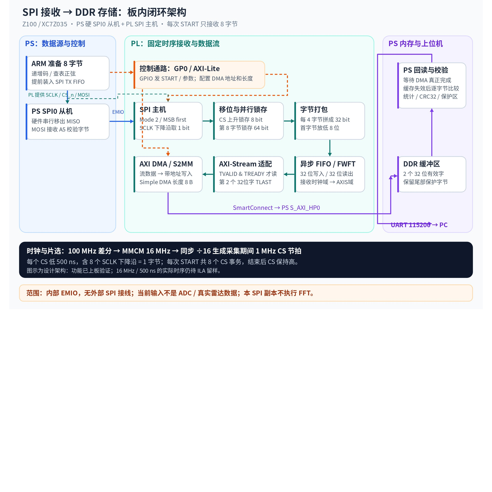
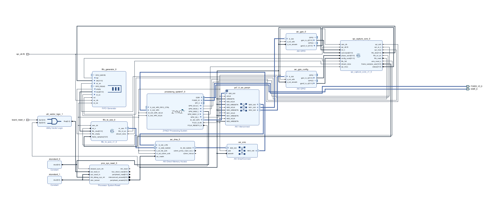
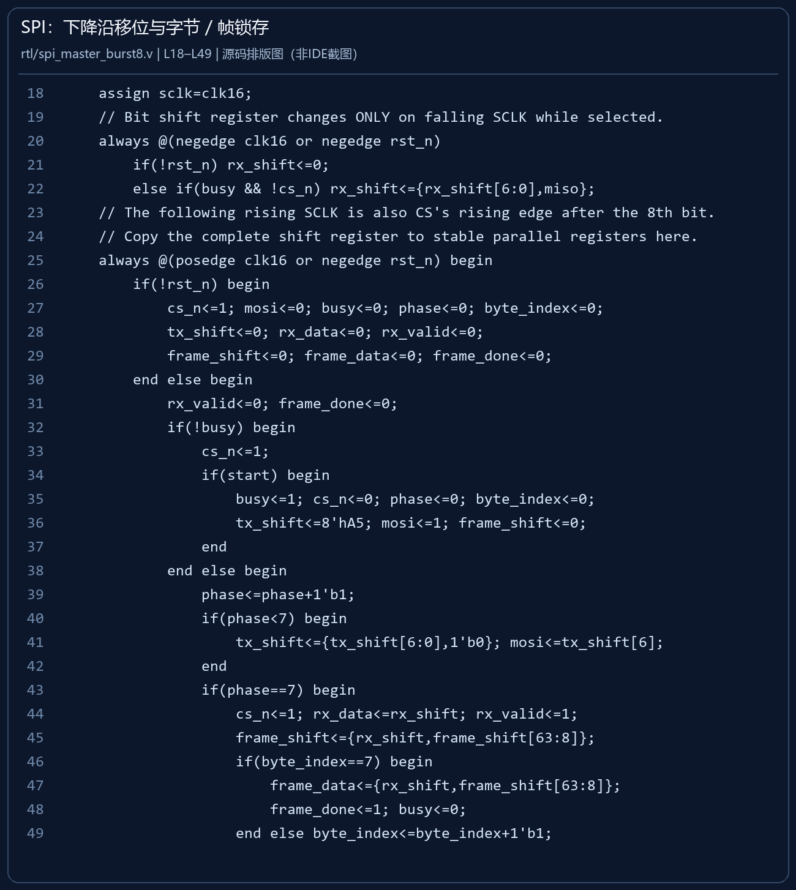
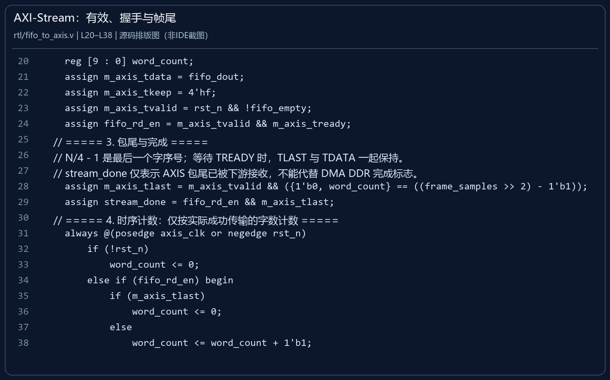
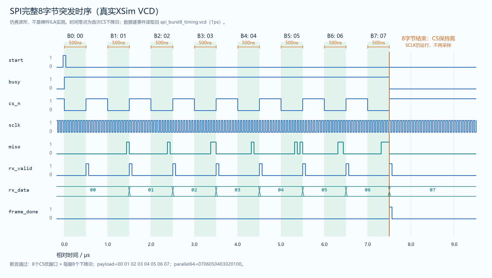
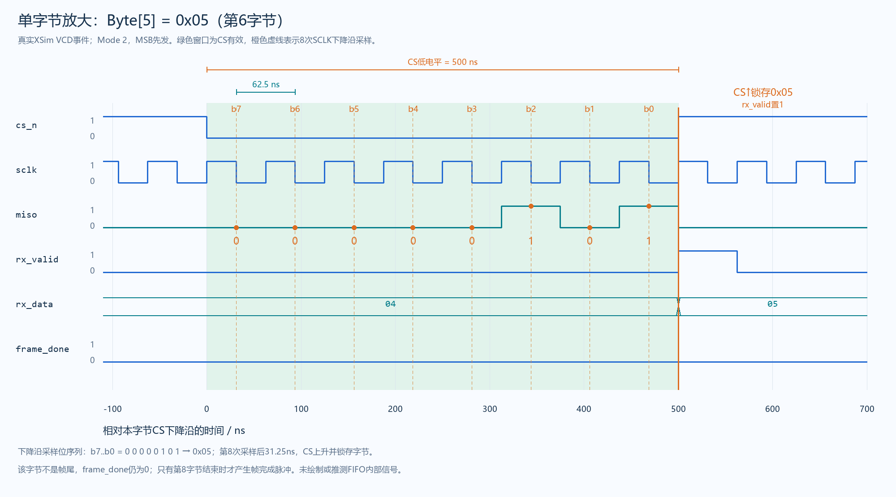
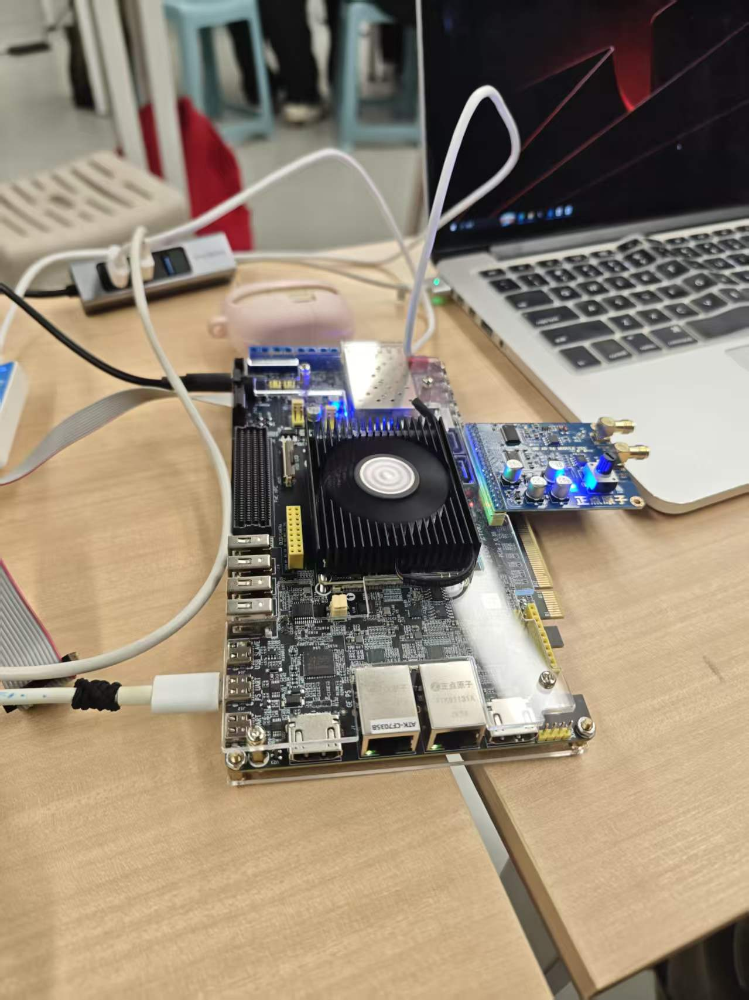
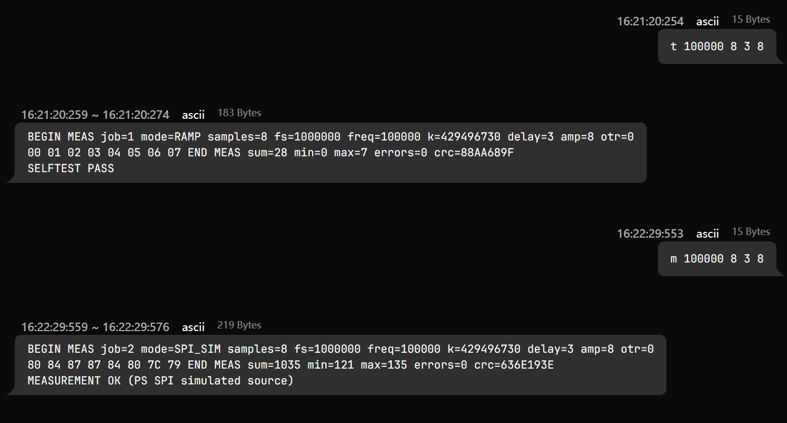

第三部分本阶段已完成：在正点原子 Z100 上跑通 PS SPI0 模拟从机 → PL SPI主机 → 32位打包 → FIFO → AXI DMA → DDR → PS校验 → UART输出。日志中的8次采集全部通过。本报告日期为2026-11-05，实测证据采集日期为2026-11-04。
汇报范围：相控阵雷达数据处理与存储的前期学习、接口验证与基础链路测试。本阶段使用PS生成的模拟数据，尚未接入真实雷达数据。第一、第二部分留给相应成员补充。
☐ 本部分内容、问题与实验结果待对应成员补充。
☐ 本部分内容、问题与实验结果待对应成员补充。
我们负责第三组的第三部分：面向后续相控阵雷达的数据接收、处理与存储。当前尚无真实雷达数据，本阶段沿用已跑通的FIFO、AXI DMA和DDR框架，在独立副本中将并行ADC接收替换为SPI接收，用PS端模拟源完成真实硬件闭环测试。
| 目标 | 实现与结果 | 证据边界 |
|---|---|---|
| 明确接口协议 | PL为主机，PS硬SPI0为从机；Mode 2、8bit、MSB先发 | PS不是用软件逐位翻转引脚 |
| 限制每次采集量 | 每个CS收1字节，每次START共8字节，完成后不再接收 | 不是每个CS收8字节 |
| 完成串并转换与存储 | 移位→字节锁存→64位整帧锁存；4字节打包32位→FIFO→DMA→DDR | DDR有效长度8字节，即2个32位字 |
| 验证可靠性和异常处理 | 正式导出日志8帧全通过，含复位、参数拒绝与恢复 | 尚未完成大样本长时间压力测试 |
| 保留既有工作 | 原ADC/CORDIC工程不变，SPI副本独立工程与SDK工作区 | SPI副本当前不执行FFT或CORDIC运算 |
阶段结论：已完成SPI接收至DDR存储及PS回读校验的功能验证；该成果是雷达数据链路的前期验证，不等同于完整相控阵雷达系统、测角或多目标分离。


数据通路和控制通路分开设计：PS通过AXI GPIO下发参数与START，通过AXI-Lite配置DMA；数据由PS SPI0经过EMIO进入PL，最终通过HP0写入PS侧DDR。PS ARM提供测试数据并处理命令，PL负责固定时序采样。
| 节点 | 职责 | 数据或接口形式 |
|---|---|---|
| PS ARM + SPI0 | 准备递增码或查表正弦，预填发送FIFO，作为硬件SPI从机输出 | 8个8位字节；MISO输出，MOSI接收固定A5校验字节 |
| EMIO内部连线 | 在Zynq内部把PS SPI信号引入PL，无需板外SPI跳线 | PL SCLK→PS SCLK_I；PL CS_n→PS SS_I；PS MISO_O→PL MISO |
| spi_clk_wiz | 将板载100MHz差分时钟转换成16MHz | MMCM输出16MHz；CS由同步计数逻辑÷16生成 |
| spi_master_burst8 | SCLK下降沿取1bit，收满8bit后在CS上升时锁存 | 单字节rx_data、有效rx_valid、整帧frame_data[63:0] |
| spi_capture_core | 控制采集状态，限制8字节，将4字节拼成32位 | PS控制寄存器、fifo_din[31:0]、fifo_wr_en |
| FIFO Generator | 缓存并完成SPI时钟域到AXIS时钟域的数据交接 | 32位写入/32位读出，读侧为FWFT模式 |
| fifo_to_axis | 将FIFO头数据映射为AXI4-Stream | TDATA32、TKEEP=F、TVALID/TREADY握手、第2字TLAST |
| AXI DMA + SmartConnect + HP0 | 将流数据转换成带地址的存储器写事务 | S_AXIS_S2MM→M_AXI_S2MM→PS S_AXI_HP0→DDR |
| Processor System Reset | 给AXI/DMA等模块提供与时钟配合的复位 | 高/低有效复位匹配；采集模块另有复位释放同步 |
| PS UART0 | 输出状态、数据、统计和CRC，接收ASCII命令 | 115200 / 8N1 / 无流控，使用PS串口 |
| 协议项 | 当前约定 |
|---|---|
| SPI模式 | Mode 2：CPOL=1，CPHA=0，MSB first；PL在下降沿采样 |
| SCLK | 16MHz，周期62.5ns；SCLK在空闲阶段仍可运行，CS高时不采样 |
| CS节拍 | 采集期间1MHz重复节拍，低500ns/高500ns，每个低电平包含8个SCLK下降沿 |
| 采集长度 | 一次START产生8个CS低脉冲，结束后CS保持高 |
| 打包顺序 | 首字节放低8位；递增码形成32位字0x03020100、0x07060504；整帧64位为0x0706050403020100 |
| fs字段 | 1000000表示有效字节采样节拍，不是16MHz的SCLK频率 |
16MHz、CS低500ns和8个CS事务已由设计与模型时序仿真检查；本次上板日志验证功能与数据一致性，没有提供ILA或示波器实测时序截图，不能把模型波形写成硬件实测波形。


本版本采用 Verilog RTL 与 Vivado Block Design 结合：RTL定义串行采样、限长、打包和握手，BD负责连接FIFO、AXI DMA、PS及复位时钟。PS程序使用C语言，负责准备SPI从机数据、配置DMA和核对DDR结果。
SCLK由16 MHz时钟直接输出。每个CS低窗口包含8个下降沿，MISO按MSB先传入8位移位寄存器。第8位采完后的上升沿同时释放CS，并锁存完整字节；并不在每个下降沿接收一个字节。
代码出处：rtl/spi_master_burst8.v，第18—22行。
assign sclk=clk16;
// Bit shift register changes ONLY on falling SCLK while selected.
always @(negedge clk16 or negedge rst_n)
if(!rst_n) rx_shift<=0;
else if(busy && !cs_n) rx_shift<={rx_shift[6:0],miso};代码出处：rtl/spi_master_burst8.v，第43—49行。
if(phase==7) begin
cs_n<=1; rx_data<=rx_shift; rx_valid<=1;
frame_shift<={rx_shift,frame_shift[63:8]};
if(byte_index==7) begin
frame_data<={rx_shift,frame_shift[63:8]};
frame_done<=1; busy<=0;
end else byte_index<=byte_index+1'b1;rx_valid为一个16 MHz时钟周期的字节有效脉冲；上层控制器据此计数与打包。byte_index==7标记第8字节，随后置busy=0、保持CS高，停止继续采样。frame_data在第8字节结束时一次性锁存64位；第一字节位于最低8位。例如递增码帧得到64'h0706050403020100。<=：同一时钟沿内右侧读取更新前的寄存器值。这里锁存的是此前下降沿已经完成的rx_shift，不会漏掉第8位；控制器在随后一个上升沿看到有效脉冲。代码出处：rtl/spi_capture_core.v，第37—40行。
// Earliest byte goes into bits 7:0. Exactly 8 bytes produce two FIFO words.
assign fifo_din={sample,pack};
assign fifo_wr_en=spi_reset_n && state==CAPTURE && sample_valid &&
count<8 && !fifo_full && count[1:0]==3;代码出处：rtl/spi_capture_core.v，第73—86行。
CAPTURE: begin
if(fifo_full) begin overflow<=1;state<=ERROR;end
else if(sample_valid && count<8) begin
case(count[1:0])
0:pack[7:0]<=sample;
1:pack[15:8]<=sample;
2:pack[23:16]<=sample;
3:pack<=0;
endcase
count<=count+1'b1;
if(count==7) begin frame_done<=1;state<=WAIT_DMA;end
end
end
WAIT_DMA: if(ack_sync[1]!=ack_seen) begin ack_seen<=ack_sync[1];state<=IDLE;end| 步骤 | 实现逻辑 | 递增码示例 |
|---|---|---|
| 第1—3字节 | 顺序写入24位pack的低、中、高字节。 | pack暂存00、01、02。 |
| 第4字节 | 把当前sample放在高8位，与旧pack拼接；只在本次有效脉冲且FIFO未满时写入。 | 第1个32位字为0x03020100。 |
| 第5—8字节 | 重复打包，累计count达到8后转入WAIT_DMA。 | 第2个32位字为0x07060504。 |
| 等待DDR完成 | 收到PS的完成ACK翻转才恢复IDLE，避免把仅完成串行接收当成整条存储链路完成。 | 下一次START开始新8字节帧。 |
第四字节有效时，FIFO在时钟沿读取组合拼接值；同一沿的pack<=0在非阻塞更新阶段生效，因此不会把刚要写出的前三字节提前清掉。FIFO输入与输出均为32位，本版每次产生两个字。
代码出处：rtl/fifo_to_axis.v，第20—29行。
reg [9 : 0] word_count;
assign m_axis_tdata = fifo_dout;
assign m_axis_tkeep = 4'hf;
assign m_axis_tvalid = rst_n && !fifo_empty;
assign fifo_rd_en = m_axis_tvalid && m_axis_tready;
// ===== 3. 包尾与完成 =====
// N/4 - 1 是最后一个字序号；等待 TREADY 时，TLAST 与 TDATA 一起保持。
// stream_done 仅表示 AXIS 包尾已被下游接收，不能代替 DMA DDR 完成标志。
assign m_axis_tlast = m_axis_tvalid && ({1'b0, word_count} == ((frame_samples >> 2) - 1'b1));
assign stream_done = fifo_rd_en && m_axis_tlast;dout已是队首有效数据，不能直接用于有读出延迟的Standard FIFO。TVALID && TREADY同时为1的时钟沿传输一个32位字，才拉高fifo_rd_en并推进字计数。TKEEP=4'hF说明本字4个字节均有效。frame_samples=8，故最后一个字序号为8/4-1=1，即第二个32位字带TLAST。stream_done只证明AXIS最后一字已被DMA接受；PS还必须检查DMA IOC、非忙和错误状态，才认定DDR写入完成。代码出处：software/main.c，第42—53行。
if (XSpiPs_SetOptions(&source_spi, XSPIPS_CLK_ACTIVE_LOW_OPTION) != XST_SUCCESS) return XST_FAILURE;
XSpiPs_WriteReg(sc->BaseAddress, XSPIPS_IDR_OFFSET, 0x7FU);
XSpiPs_WriteReg(sc->BaseAddress, XSPIPS_RXWR_OFFSET, 1);
for (i = 0; i < n; ++i) {
spi_source[i] = ramp ? (u8)i : (u8)(128 + sine_lut[phase >> 24] * (int)amplitude / 127);
phase += k;
}
spi_queued = spi_received = 0; spi_length = n; spi_fault = 0;
XSpiPs_Enable(&source_spi);
while (spi_queued < n && !(XSpiPs_ReadReg(sc->BaseAddress, XSPIPS_SR_OFFSET) & XSPIPS_IXR_TXFULL_MASK))
XSpiPs_WriteReg(sc->BaseAddress, XSPIPS_TXD_OFFSET, spi_source[spi_queued++]);
XSpiPs_WriteReg(sc->BaseAddress, XSPIPS_SR_OFFSET, XSPIPS_IXR_WR_TO_CLR_MASK);代码出处：software/main.c，第141—150行。
memset(buffer, 0xa5, sizeof(buffer));
Xil_DCacheFlushRange((UINTPTR)buffer, sizeof(buffer));
XAxiDma_IntrAckIrq(&dma, XAXIDMA_IRQ_ALL_MASK, XAXIDMA_DEVICE_TO_DMA);
if (XAxiDma_SimpleTransfer(&dma, (UINTPTR)buffer, n, XAXIDMA_DEVICE_TO_DMA) != XST_SUCCESS)
goto fail;
if (prepare_spi(ramp, n, k, amp) != XST_SUCCESS) goto fail;
cmd = (cmd & 17U) | (ramp ? 2U : 0U) | 8U;
cmd ^= 1;
XGpio_DiscreteWrite(&control, 1, cmd);PS通过查表和32位相位累加生成正弦测试源，或生成递增码；SPI0使用从机模式，经内部EMIO连接PL。8字节事先填入硬件TX FIFO，PL启动后由硬件移位发送，避免依赖ARM软件逐位翻转引脚。
| 软件步骤 | 实现与必要性 | 代码出处 |
|---|---|---|
| 准备缓冲区与接收 | 整段buffer填0xA5并flush缓存；先启动S2MM DMA，长度为n=8字节，再准备SPI并下发START。 | main.c 第141—150行 |
| 等待真实完成 | 检查PL完成、DMA IOC、DMA不忙、SPI收到了8个MOSI字节，任何错误或超时均失败。 | main.c 第153—173行 |
| 缓存一致性 | DMA完成后invalidate缓存，再由CPU读取DDR，防止读到旧缓存。 | main.c 第174行 |
| 逐字节比较 | buffer[0..7]与PS源数据比较；递增码另与索引比较。 | main.c 第176—185行 |
| 越界写保护 | 第8字节以后的缓冲区必须仍为0xA5；本版检查余下4152字节。 | main.c 第26、186—188行 |
| 输出可复核记录 | 输出8字节、sum/min/max、errors及CRC32，随后给出成功或失败标志。 | main.c 第198—206行 |
数据源算法为：K=round(f·2^32/Fs)，每点phase+=K，用phase高8位查256点正弦表，再进行整数缩放并加128。这里Fs=1 MHz是字节样本节拍，不是16 MHz SPI位时钟；幅度参数是数字码值，不是电压。C语言整数截断和查表量化会使实际样本幅度小于理想连续正弦的峰值。
源码中的phase_word、命令delay和状态otr为兼容旧寄存器/串口格式而保留：PL不再用phase_word生成波形，delay不代表外部ADC延迟，otr是保留位。串口帮助文字中的“real”也是历史描述；本次有效模式应以mode=SPI_SIM及PS SPI模拟源标志为准。
| 阶段/问题 | 分析与处理 | 验证结果 |
|---|---|---|
| 从并行ADC工程迁移 | 复制工程后保留DDR、DMA等已验证部分，替换输入采集模块；清理活动设计中的ADC/DA端口和CORDIC | 当前工程spi_capture.xpr，顶层z100_spi_top，原工程关键文件哈希保持不变 |
| 最初帧长描述有歧义 | 16MHz SCLK下，1MHz且50%占空比CS每次只能容纳8bit；明确为每CS1字节、每START8字节 | 消除每CS8字节所需64个时钟与500ns窗口的冲突 |
| 如何实现PS模拟SPI从机 | 采用PS真实SPI0硬外设而非ARM软件模拟边沿；提前把8字节放入TX FIFO，再启动PL主机 | 实际RAMP和SPI_SIM测试均收到正确8字节 |
| MMCM无法按此器件直接生成1MHz输出 | MMCM先生成16MHz，逻辑计数产生1MHz的CS节拍，不把CS当作数据时钟域 | 模型验证CS低500ns与1us周期 |
| AXIS有背压时避免重复读或丢字 | 仅在TVALID与TREADY同时为1时拉高FIFO读使能并推进字计数 | FIFO/AXIS仿真覆盖4次停顿，帧尾保持正确 |
| AXIS传完不代表DDR已写完 | 分别检查stream_done、DMA IOC、DMA Busy解除和PS SPI收数，再进行缓存失效和DDR比较 | 程序未仅凭stream_done就提前判定完成 |
| 串口无响应但有启动横幅 | 截图中手输\n为2字节，程序未收到0D/0A；改用HEX命令末尾真实0D结束一行 | 实际发送74…38 0D后立即出现SELFTEST PASS |
| 串口接收被拆成多条记录 | JSON中STATUS与BEGIN等文本跨read事件，分析时先按发送命令拼接连续接收片段 | 完整8帧解析后点数、统计和CRC全一致 |
| 历史ADC术语残留 | 活动模块改为SPI命名，旧源码归档；源代码仍保留兼容字段与提示字符串 | phase_word/delay/otr为兼容或保留字段；帮助文字real不代表物理ADC，本版mode=SPI_SIM |
研究采用分层推进：先验证串行时序，再验证FIFO与AXIS，再验证真实BD中的DMA/DDR，最后在Z100上用递增码定位位序/字节序问题、用正弦模拟数据验证参数路径。全过程保留源文件、仿真结果、实现报告和原始串口JSON，以便追溯。


| 检查层次 | 实际记录 | 结论及范围 |
|---|---|---|
| SPI单元仿真 | 32次×8字节，覆盖256种字节值；64位锁存、额外不采、MOSI A5检查通过 | spi_burst8_result.txt；模型替代PS从机移位行为 |
| 采集/FIFO/AXIS仿真 | 5帧、145项检查、4次背压停顿；非法参数与FIFO满后恢复通过 | spi_capture_result.txt；包括真实FIFO IP |
| BD + DMA + DDR仿真 | 2帧共16字节，966项检查；752个保护字节未改写 | ddr_result.txt；PS VIP未执行ARM C，MISO由TB模型代替 |
| PS软件编译 | SDK2018.3生成spi_uart.elf | 编译通过后另由用户实际JTAG Debug运行验证 |
| 实现时序 | WNS=+5.783ns；WHS=+0.055ns；TNS=0；THS=0 | 当前约束下实现时序通过，不替代CDC审查 |
| DRC | 0条Error；1条REQP-181 Advisory | DMA内部BRAM WRITE_FIRST提示，保存原报告 |
| CDC | 2条CDC-10 Critical，1条CDC-13 Critical | 复位/FIFO相关跨时钟诊断仍需审查；不能写成全项CDC签核完成 |
证据按时间分层：SPI_VERIFICATION.json是上板前快照，其中“not board-tested”为当时状态；本次新增board_test_20261104中的用户实测日志为后续证据。报告采用后续实测结果，不改写旧快照。
下图来自实际仿真VCD生成的时序图，用于展示8个CS字节窗口、单字节有效脉冲和帧完成位置，属于仿真证据。

| 项目 | 配置 |
|---|---|
| 平台 | 正点原子Z100，XC7Z035FFG900-2 |
| 开发环境 | Vivado 2018.3 + Xilinx SDK 2018.3，Verilog RTL + Block Design + PS裸机C |
| 下载方式 | JTAG配置PL bit，SDK System Debugger下载PS ELF，停在main后Resume |
| 串口 | PS UART0，MIO14～15，115200/8N1，无流控 |
| SPI数据源 | PS SPI0内部EMIO从机；扩展AD/DA模块不参与当前SPI数据源 |
| 测试日期 | 2026-11-04；汇报日期2026-11-05 |
| 运行入口 | main初始化UART/GPIO/DMA后打印启动横幅，NO AUTO START，等待串口命令 |
实验场景照片由小组提供：可见Z100、电脑和扩展模块。SPI时钟、片选、MOSI、MISO走芯片内部EMIO，本阶段不依赖扩展AD/DA模块的模拟输出。照片用于记录实验环境，不用于证明具体SPI时序。

正式导出日志：2026-11-04 16:34:38～16:36:27，共12条发送命令、30条收发记录、8帧成功采集（RAMP 3帧、SPI_SIM 5帧），有效载荷共64字节。全部8帧errors=0，点数、sum/min/max和CRC32经独立重算均一致。
| job | 模式 | 目标频率/Hz | 幅度/code | 接收8字节 HEX | CRC32 | 结果 |
|---|---|---|---|---|---|---|
| 7 | RAMP | 100000 | 8 | 00 01 02 03 04 05 06 07 | 88AA689F | 通过 |
| 8 | SPI_SIM | 100000 | 8 | 80 84 87 87 84 80 7C 79 | 636E193E | 通过 |
| 9 | RAMP | 100000 | 8 | 00 01 02 03 04 05 06 07 | 88AA689F | 通过 |
| 10 | SPI_SIM | 100000 | 8 | 80 84 87 87 84 80 7C 79 | 636E193E | 通过 |
| 11 | RAMP | 100000 | 8 | 00 01 02 03 04 05 06 07 | 88AA689F | 通过 |
| 12 | SPI_SIM | 100000 | 8 | 80 84 87 87 84 80 7C 79 | 636E193E | 通过 |
| 13 | SPI_SIM | 200000 | 8 | 80 87 84 7C 79 80 87 84 | ABBE68EC | 通过 |
| 14 | SPI_SIM | 100000 | 16 | 80 89 8F 8F 89 80 77 71 | C1DF3876 | 通过 |
上表来自records-2026-11-04-16-36-31.json，不把其他早期截图混入这8帧统计。早期截图另展示job=1与job=2，用作首次功能跑通的留样。频率列是PS测试信号的配置参数，当前8点链路未进行FFT测频。
| 专项测试 | 实际日志 | 判断 |
|---|---|---|
| 重复启动 | job7～10：递增码/正弦各2次交替成功，后续还执行4次采集 | 短序列重复运行通过；未达到各10次，更未证明长期稳定性 |
| 停止与复位 | 两次q均返回STOPPED / RESET OK | 复位命令执行成功 |
| 复位后状态 | raw=00000040，busy=0 overflow=0 done=0 ready=1 count=0 state=0 streamed=0 | 空闲恢复正确；raw心跳位变化不应被误判为异常 |
| 复位后再次采集 | job11 RAMP，CRC=88AA689F | 恢复后采集通过 |
| 长度保护 | m 100000 16 3 8 → ERROR parameters: ... N 8 only | 拒绝非法长度，不启动该次采集 |
| 非法参数后的恢复 | job12 SPI_SIM，CRC=636E193E | 合法命令仍可正常运行 |
| 频率参数变化 | job13 200kHz：80 87 84 7C 79 80 87 84 | 数据随参数变化，CRC=ABBE68EC |
| 幅度参数变化 | job14 amp16：80 89 8F 8F 89 80 77 71 | 范围113～143，比amp8时121～135扩大，CRC=C1DF3876 |
BEGIN MEAS job=1 mode=RAMP samples=8 fs=1000000 freq=100000 k=429496730 delay=3 amp=8 otr=0
00 01 02 03 04 05 06 07
END MEAS sum=28 min=0 max=7 errors=0 crc=88AA689F
SELFTEST PASS
BEGIN MEAS job=2 mode=SPI_SIM samples=8 fs=1000000 freq=100000 k=429496730 delay=3 amp=8 otr=0
80 84 87 87 84 80 7C 79
END MEAS sum=1035 min=121 max=135 errors=0 crc=636E193E
MEASUREMENT OK (PS SPI simulated source)递增码0～7验证位序、字节序和长度；正弦序列围绕128变化。100kHz信号在1MHz字节采样节拍下约10点/周期，本次8点不足一个完整周期，不能将这组数据写成完整频谱性能实验。串口页面显示的发送/接收时间包含打印和工具缓冲，也不能直接当作SPI采集耗时。
| 已完成 | 尚未证明/完成 | 下一步 |
|---|---|---|
| 内部PS硬SPI→PL→DDR的功能闭环 | 真实外部SPI从机的电气接口和约束 | 明确真实设备协议、电压、引脚和时序后再接入 |
| 固定8字节突发采集和CRC校验 | 大帧持续采集、DDR乒乓缓冲、吞吐与丢包率 | 后续需求明确后扩展帧长/缓存，不改变本次8字节验收结论 |
| 设计时序仿真和实现时序通过 | 真实SCLK/CS脉宽及采样沿的ILA证据 | 添加ILA观测CS、SCLK、MISO、rx_valid、frame_done |
| 当前样例无错误 | 递增码/正弦各10次及长时间压力测试 | 补足重复次数并统计总帧数、失败率与恢复情况 |
| 基础接收与存储框架已具备 | 真实雷达数据接入、FFT性能、多目标分离和测角 | 先确认后续数据格式、采样量与处理指标 |
| 复位/流控已有功能测试 | CDC报告完全签核 | 逐条审查复位释放、FIFO复位与跨域控制稳定性 |
SPI副本已移除CORDIC与并行AD/DA输入。本阶段正弦由PS查表生成，仅作为SPI测试载荷；FFT在8字节调试帧中被明确禁用。原ADC/CORDIC/网页FFT阶段成果属于此前工程，不能算作本SPI副本新增硬件FFT实现。
☑ SPI接收、移位锁存、32位打包、FIFO、DMA、DDR、PS校验与UART闭环通过。
☑ 复位恢复、非法长度保护、频率和幅度参数变化测试通过。
☐ 补齐大样本重复性测试与硬件ILA时序留样。
☐ 审查CDC诊断，并按实际雷达接口需求推进下一阶段。
| 内容 | 本地位置（需从工程包解压后使用） |
|---|---|
| SPI工程根目录 | E:/FPGAWork/z100_spi_sim_20261104 |
| Vivado入口 | spi_capture.xpr；顶层z100_spi_top |
| Block Design | spi_capture.srcs/sources_1/bd/capture_bd/capture_bd.bd |
| PL文件 | hardware/z100_spi_sim.bit；hardware/system.hdf；hardware/z100_spi_sim.hdf |
| SDK工作区 | sdk_spi_workspace；应用spi_uart，BSP spi_bsp，平台z100_hw |
| PS程序 | hardware/spi_uart.elf；SDK中spi_uart/Debug/spi_uart.elf |
| 源码 | rtl/spi_master_burst8.v、spi_capture_core.v、fifo_to_axis.v；software/main.c |
| 证据 | evidence/board_test_20261104；evidence/report_20261105 |
| 操作说明 | docs/SPI_BOARD_DEBUG.md；README.md |
| 可选网页 | http://127.0.0.1:8766/；SPI版每帧8字节，不用原ADC版8765 |
复现步骤：打开当前SDK工作区并Build All；Program FPGA选择SPI版bit；对spi_uart执行Debug As → Launch on Hardware (System Debugger)，启用当前平台ps7_init.tcl初始化，停在main后先连接PS串口再F8继续；看到NO AUTO START横幅后逐条发送以下带回车的命令。
| 目的 | ASCII命令（末尾回车） | HEX（含0D） |
|---|---|---|
| 递增码 | t 100000 8 3 8 | 74 20 31 30 30 30 30 30 20 38 20 33 20 38 0D |
| 正弦 | m 100000 8 3 8 | 6D 20 31 30 30 30 30 30 20 38 20 33 20 38 0D |
| 停止复位 | q | 71 0D |
| 状态 | s | 73 0D |
| 非法长度 | m 100000 16 3 8 | 6D 20 31 30 30 30 30 30 20 31 36 20 33 20 38 0D |
| 改频率 | m 200000 8 3 8 | 6D 20 32 30 30 30 30 30 20 38 20 33 20 38 0D |
| 改幅度 | m 100000 8 3 16 | 6D 20 31 30 30 30 30 30 20 38 20 33 20 31 36 0D |
以SELFTEST PASS或MEASUREMENT OK且errors=0为功能通过条件。若失败，先导出日志，再r回车复位；不要同时由网页、SDK Terminal和串口助手占用同一个COM。本文记录的操作为JTAG Debug，不包含写Flash。
小组既有GitHub仓库（此前ADC/CORDIC基线）：
版本说明：本次SPI副本发布在独立分支 feature/spi-8byte-20261105，下载地址：https://github.com/WuWingKit/z100-ad9280-capture/releases/tag/v0.4.0-spi-20261105。原main分支保留ADC/CORDIC基线，复现时使用SPI版本。
证据附件索引：原始records JSON、按命令重组的串口TXT、逐帧统计/CRC校验JSON、源码与构建报告。原始JSON SHA256：2dd9b3bcac7d6acbed8de76bbef7228c0098612af08fa0c046453e9c4e2100b3
提交前协作事项：第一、第二部分由对应成员补充；第三部分可按组内实际分工添加姓名。报告日期固定为2026-11-05，保留原始实测时间与次数，不用汇报日期替换实验时间。